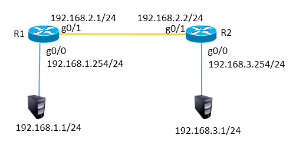
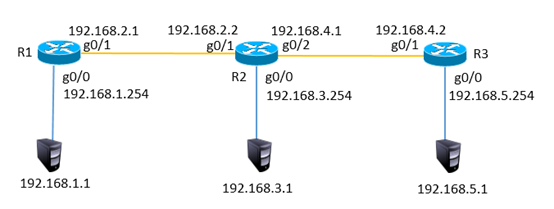
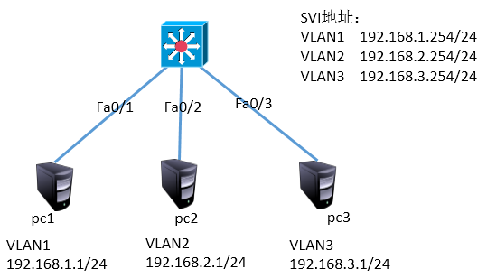
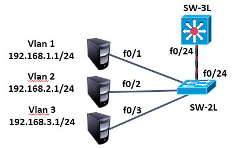
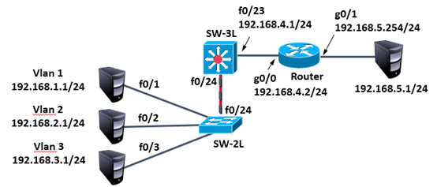

NSD PROJECT1 DAY03
1 案例1：配置静态路由
1.1 问题
按照图-1的拓扑结构配置接口ip地址并通过静态路由实现全网互通

图-1
1.2 步骤
R1配置
- Router>enable
- Router#configure terminal
- Router(config)#interface gigabitEthernet 0/0
- Router(config-if)#ip address 192.168.1.254 255.255.255.0 //配置ip地址
- Router(config-if)#no shutdown //开启接口
- Router(config-if)#exit
- Router(config)#interface gigabitEthernet 0/1
- Router(config-if)#ip address 192.168.2.1 255.255.255.0
- Router(config-if)#no shutdown
- Router(config-if)#exit
- Router(config)#ip route 192.168.3.0 255.255.255.0 192.168.2.2 //配置静态路由
R2配置
- Router>enable
- Router#configure terminal
- Router(config)#interface gigabitEthernet 0/0
- Router(config-if)#ip address 192.168.3.254 255.255.255.0
- Router(config-if)#no shutdown
- Router(config-if)#exit
- Router(config)#interface gigabitEthernet 0/1
- Router(config-if)#ip address 192.168.2.2 255.255.255.0
- Router(config-if)#no shutdown
- Router(config-if)#exit
- Router(config)#ip route 192.168.1.0 255.255.255.0 192.168.2.1
2 案例2：配置多路由环境网络
2.1 问题
按照图-2拓扑结构配置接口ip地址并通过静态路由实现全网互通

图-2
2.2 步骤
注：以下配置需要在案例1的基础上完成
R1配置
- Router(config)#ip route 192.168.4.0 255.255.255.0 192.168.2.2
- Router(config)#ip route 192.168.5.0 255.255.255.0 192.168.2.2
R2配置
- Router(config)#interface gigabitEthernet 0/2
- Router(config-if)#ip address 192.168.4.1 255.255.255.0
- Router(config-if)#no shutdown
- Router(config)#ip route 192.168.5.0 255.255.255.0 192.168.4.2
R3配置
- Router>enable
- Router#configure terminal
- Router(config)#interface gigabitEthernet 0/0
- Router(config-if)#ip address 192.168.5.254 255.255.255.0
- Router(config-if)#no shutdown
- Router(config-if)#exit
- Router(config)#interface gigabitEthernet 0/1
- Router(config-if)#ip address 192.168.4.2 255.255.255.0
- Router(config-if)#no shutdown
- Router(config-if)#exit
- Router(config)#ip route 192.168.1.0 255.255.255.0 192.168.4.1
- Router(config)#ip route 192.168.2.0 255.255.255.0 192.168.4.1
- Router(config)#ip route 192.168.3.0 255.255.255.0 192.168.4.1
3
4 案例3：三层交换机基本配置
4.1 问题
按照图-3的拓扑结构配置ip地址并通过三层交换实现VLAN间通信

图-3
4.2 步骤
三层交换机配置
- Switch>enable
- Switch#configure terminal
- Switch(config)#interface vlan 1
- Switch(config-if)#ip address 192.168.1.254 255.255.255.0
- Switch(config-if)#no shutdown
- Switch(config-if)#vlan 2
- Switch(config-vlan)#vlan 3
- Switch(config-vlan)#exit
- Switch(config)#interface vlan 2
- Switch(config-if)#ip address 192.168.2.254 255.255.255.0
- Switch(config-vlan)#exit
- Switch(config)#interface vlan 3
- Switch(config-if)#ip address 192.168.3.254 255.255.255.0
- Switch(config-vlan)#exit
- Switch(config)#ip routing //开启路由功能
- Switch(config)#interface fastEthernet 0/2
- Switch(config-if)#switchport access vlan 2 //将f0/2接口加入vlan2
- Switch(config-if)#interface fastEthernet 0/3
- Switch(config-if)#switchport access vlan 3
5 案例4：三层交换机实现VLAN互通
5.1 问题
按照图-5拓扑图配置ip地址并实现vlan间通信，二层交换机与三层交换机之间只有一条链路，为了在一条链路中传递不同VLAN的数据，需要将这条链路配置为TRUNK

图-4
5.2 步骤
注：以下配置需要在案例3的基础上完成
三层交换机配置
- Switch(config)#interface fastEthernet 0/24
- Switch(config-if)#switchport trunk encapsulation dot1q //打封装
- Switch(config-if)#switchport mode trunk //配置中继链路
二层交换机配置
- Switch>enable
- Switch#configure terminal
- Switch(config)#interface fastEthernet 0/2
- Switch(config-if-range)#switchport access vlan 2
- Switch(config-if-range)#exit
- Switch(config)#interface fastEthernet 0/3
- Switch(config-if-range)#switchport access vlan 3
- Switch(config)#interface fastEthernet 0/24
- Switch(config-if)#switchport mode trunk
6 案例5：搭建小型办公网络
6.1 问题
按照图-5规划配置实现全网互通
这里的192.168.5.0网段模拟为外网网段，需要使用默认路由才能到达。

图-5
6.2 步骤
注：以下配置需要在案例4的基础上完成
三层交换机配置
- Switch(config)#interface fastEthernet 0/23
- Switch(config-if)#no switchport
- Switch(config-if)#ip address 192.168.4.1 255.255.255.0
- Switch(config-if)#exit
- Switch(config)#ip route 0.0.0.0 0.0.0.0 192.168.4.2 //配置默认路由前往外网
路由器配置
- Router>enable
- Router#configure terminal
- Router(config)#interface gigabitEthernet 0/0
- Router(config-if)#ip address 192.168.4.2 255.255.255.0
- Router(config-if)#no shutdown
- Router(config-if)#exit
- Router(config)#interface gigabitEthernet 0/1
- Router(config-if)#ip address 192.168.5.254 255.255.255.0
- Router(config-if)#no shutdown
- Router(config-if)#exit
- Router(config)#ip route 192.168.1.0 255.255.255.0 192.168.4.1
- Router(config)#ip route 192.168.2.0 255.255.255.0 192.168.4.1
- Router(config)#ip route 192.168.3.0 255.255.255.0 192.168.4.1
7 案例6：动态路由
7.1 问题
通过配置静态路由协议ospf实现全网互通，可以先将静态路由删除

图-6
7.2 步骤
注：以下配置需要在案例5的基础上完成
三层交换机配置
- Switch(config)#router ospf 1
- Switch(config-router)#network 192.168.1.0 0.0.0.255 area 0
- Switch(config-router)#network 192.168.2.0 0.0.0.255 area 0
- Switch(config-router)#network 192.168.3.0 0.0.0.255 area 0
- Switch(config-router)#network 192.168.4.0 0.0.0.255 area 0
路由器配置
- Router(config)#no ip route 192.168.1.0 255.255.255.0 192.168.4.1
- Router(config)#no ip route 192.168.2.0 255.255.255.0 192.168.4.1
- Router(config)#no ip route 192.168.3.0 255.255.255.0 192.168.4.1
- Router(config)#router ospf 1
- Router(config-router)#network 192.168.4.0 0.0.0.255 area 0